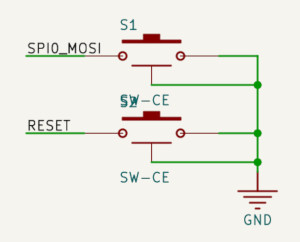
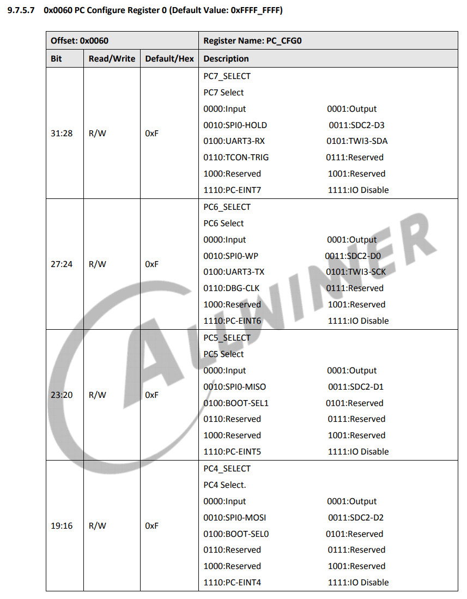
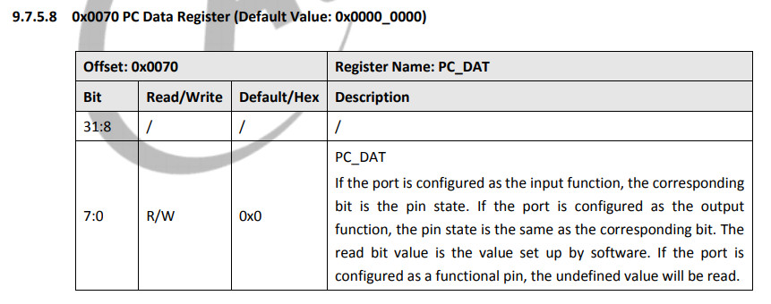
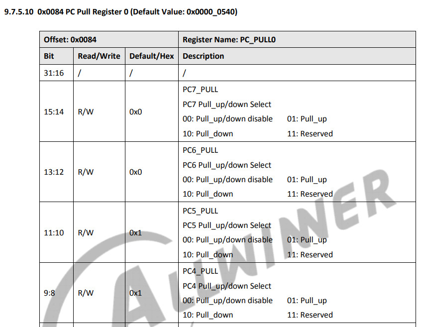
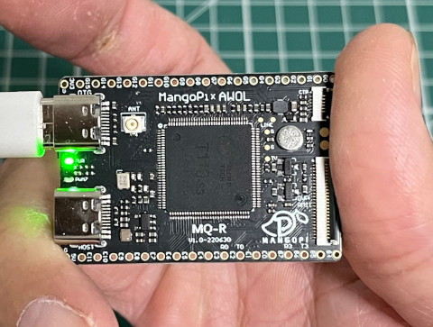
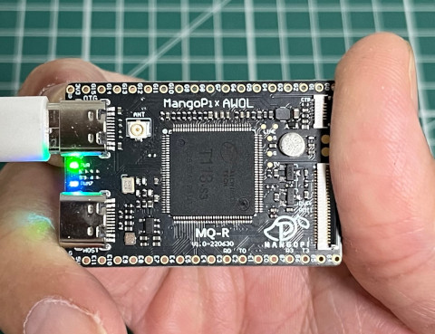

Button連接到PC4(SPI_MOSI)腳位





.global _start
.equ GPIO_BASE, 0x02000000
.equ PC_CFG0, (GPIO_BASE + 0x60)
.equ PC_DAT, (GPIO_BASE + 0x70)
.equ PC_PULL0, (GPIO_BASE + 0x84)
.equ PD_CFG2, (GPIO_BASE + 0x98)
.equ PD_DAT, (GPIO_BASE + 0xa0)
.arm
.text
_start:
.long 0xea000016
.byte 'e', 'G', 'O', 'N', '.', 'B', 'T', '0'
.long 0, __spl_size
.byte 'S', 'P', 'L', 2
.long 0, 0
.long 0, 0, 0, 0, 0, 0, 0, 0
.long 0, 0, 0, 0, 0, 0, 0, 0
_vector:
b reset
b .
b .
b .
b .
b .
b .
b .
reset:
ldr r0, =PC_CFG0
ldr r1, =0x00000000
str r1, [r0]
ldr r0, =PC_PULL0
ldr r1, =0x00000100
str r1, [r0]
ldr r0, =PD_CFG2
ldr r1, =0x01000000
str r1, [r0]
ldr r0, =PC_DAT
ldr r1, =PD_DAT
0:
ldr r2, [r0]
lsl r2, #18
str r2, [r1]
b 0b
.end
完成

